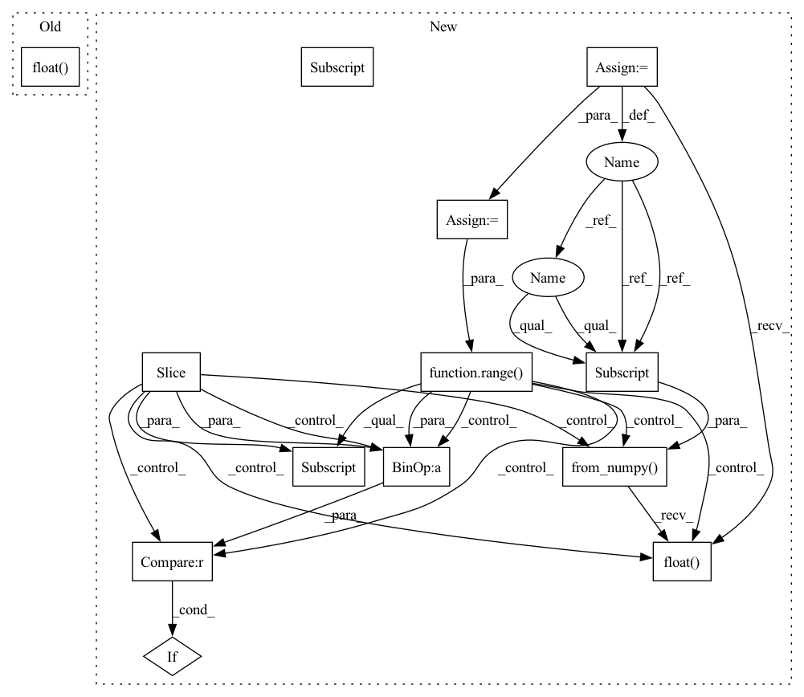

Pattern ID :11904

Before Change
feature = data[:, :, 0:-1].to(self.device)
with torch.no_grad():
pred = self.model(feature.float()).detach().cpu().numpy()
preds.append(pred)
After Change
x_test = dataset.prepare(segment, col_set="feature", data_key=DataHandlerLP.DK_I)
index = x_test.index
self.model.eval()
x_values = x_test.values
sample_num = x_values.shape[0]
preds = []
for begin in range(sample_num)[:: self.batch_size]:
if sample_num - begin < self.batch_size:
end = sample_num
else:
end = begin + self.batch_size
x_batch = torch.from_numpy(x_values[begin:end]).float().to(self.device)
with torch.no_grad():
pred = self.model(x_batch).detach().cpu().numpy()
In pattern: SUPERPATTERN
Frequency: 3
Non-data size: 13
Instances
Fragment ID: 40051010
Project Name: microsoft/qlib
Commit Name: bee031af68cd0864c8329de13608c2d4feb58fc1
Time: 2021-07-21
Author: yl3851@uw.edu
File Name: qlib/contrib/model/pytorch_transformer.py
M Class Name: TransformerModel
N Class Name: TransformerModel
M Method Name: predict(3)
N Method Name: predict(2)
M Parent Class: Model
N Parent Class: Model
M File Name: qlib/contrib/model/pytorch_transformer.py
N File Name: qlib/contrib/model/pytorch_transformer.py
M Start Line: 206
M End Line: 220
N Start Line: 222
N End Line: 243
'>
Before Change
label = data[:, -1, -1].to(self.device)
with torch.no_grad():
pred = self.model(feature.float()) // .float()
loss = self.loss_fn(pred, label)
losses.append(loss.item())
After Change
def test_epoch(self, data_x, data_y):
// prepare training data
x_values = data_x.values
y_values = np.squeeze(data_y.values)
self.model.eval()
scores = []
losses = []
indices = np.arange(len(x_values))
for i in range(len(indices))[:: self.batch_size]:
if len(indices) - i < self.batch_size:
break
feature = torch.from_numpy(x_values[indices[i: i + self.batch_size]]).float().to(self.device)
label = torch.from_numpy(y_values[indices[i: i + self.batch_size]]).float().to(self.device)
with torch.no_grad():
'>
Fragment ID: 40051009
Project Name: microsoft/qlib
Commit Name: bee031af68cd0864c8329de13608c2d4feb58fc1
Time: 2021-07-21
Author: yl3851@uw.edu
File Name: qlib/contrib/model/pytorch_transformer.py
M Class Name: TransformerModel
N Class Name: TransformerModel
M Method Name: test_epoch(3)
N Method Name: test_epoch(2)
M Parent Class: Model
N Parent Class: Model
M File Name: qlib/contrib/model/pytorch_transformer.py
N File Name: qlib/contrib/model/pytorch_transformer.py
M Start Line: 129
M End Line: 135
N Start Line: 134
N End Line: 156
'>
Before Change
feature = data[:, :, 0:-1].to(self.device)
label = data[:, -1, -1].to(self.device)
pred = self.model(feature.float()) // .float()
loss = self.loss_fn(pred, label)
self.train_optimizer.zero_grad()
After Change
def train_epoch(self, x_train, y_train):
x_train_values = x_train.values
y_train_values = np.squeeze(y_train.values)
self.model.train()
indices = np.arange(len(x_train_values))
np.random.shuffle(indices)
for i in range(len(indices))[:: self.batch_size]:
if len(indices) - i < self.batch_size:
break
feature = torch.from_numpy(x_train_values[indices[i : i + self.batch_size]]).float().to(self.device)
label = torch.from_numpy(y_train_values[indices[i : i + self.batch_size]]).float().to(self.device)
pred = self.model(feature)
'>
Fragment ID: 40051008
Project Name: microsoft/qlib
Commit Name: bee031af68cd0864c8329de13608c2d4feb58fc1
Time: 2021-07-21
Author: yl3851@uw.edu
File Name: qlib/contrib/model/pytorch_transformer.py
M Class Name: TransformerModel
N Class Name: TransformerModel
M Method Name: train_epoch(3)
N Method Name: train_epoch(2)
M Parent Class: Model
N Parent Class: Model
M File Name: qlib/contrib/model/pytorch_transformer.py
N File Name: qlib/contrib/model/pytorch_transformer.py
M Start Line: 110
M End Line: 114
N Start Line: 108
N End Line: 126